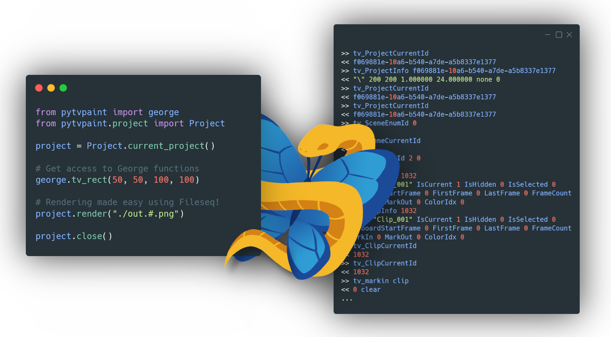

PyTVPaint 🐍 → 🦋¶


PyTVPaint lets you script for TVPaint in Python instead of George. It offers a high level object-oriented API as well as low-level George commands in a fully type-hinted library.
PyTVPaint communicates through WebSocket to a custom C++ plugin running in an open TVPaint instance.

Warning
PyTVPaint only works on Windows for now (because of the C++ plugin, the python code is agnostic to the platform but hasn't yet been tested on other OSes). Support for Linux and MacOS can be added later. If you're interested, please submit an issue or a pull request !
Why use PyTVPaint?¶
-
Coding in George is not optimal - it produces hard to maintain code, has bugs and poor support in IDEs (except syntax highlighting in IDEs, for example VSCode).
-
Fully documented - all modules are fully documented and the george docstring is up-to-date, clearer and fixes many of the errors in the official George documentation.
-
Fully type-hinted and tested API - the library uses MyPy to strictly check the Python code, Ruff to lint and detect errors and Pytest and is almost fully unit tested.
-
Seamless coding experience - no need to manually connect or disconnect to the WebSocket server, you can start coding directly and PyTVPaint will do everything for you! Just code in your favourite language (Python) and it will work!
-
Fully extensible - a George function wasn't implemented? You can either submit an issue on the repository or code it yourself! We provide tools to directly speak in George with TVPaint and parse the resulting values.
-
Used in production - PyTVPaint was born from the frustration of coding in George which made our codebase really hard to maintain here at BRUNCH Studio. It's now used in production to support our pipeline.
PyTVPaint examples¶
Get the name of all the layers in the current clip:
from pytvpaint.clip import Clip
clip = Clip.current_clip()
for layer in clip.layers:
print(layer.name)
Creating a new project:
from pytvpaint import Project
new_project = Project.new(
"./project.tvpp",
width=500,
height=800,
frame_rate=25,
start_frame=10,
)
new_project.save()
Render all the clips in the project:
from pathlib import Path
from pytvpaint import Project
project = Project.current_project()
for clip in project.clips:
out_clip = Path.cwd() / clip.name / f"{clip.name}.#.jpg"
clip.render(out_clip)
Iterate through the layer instances:
from pytvpaint import Layer
for instance in Layer.current_layer().instances:
print(instance.start, instance.name)
Disclaimer¶
PyTVPaint is a project created at BRUNCH Studio to facilitate our development experience with George. The API is targeted at experienced developers and is by no means a replacement for TVPaint or George but simply builds on it.
We are not affiliated with the TVPaint development team and therefore can't fix any bugs in the software or the George API.
Please direct your issues appropriately; any issues with PyTVPaint should be submitted as an issue in this repository or the C++ plugin's repository, any issues with TVPaint the software should be addressed to the tvp support team.
For any questions on the limitations of our API, please head to this page.